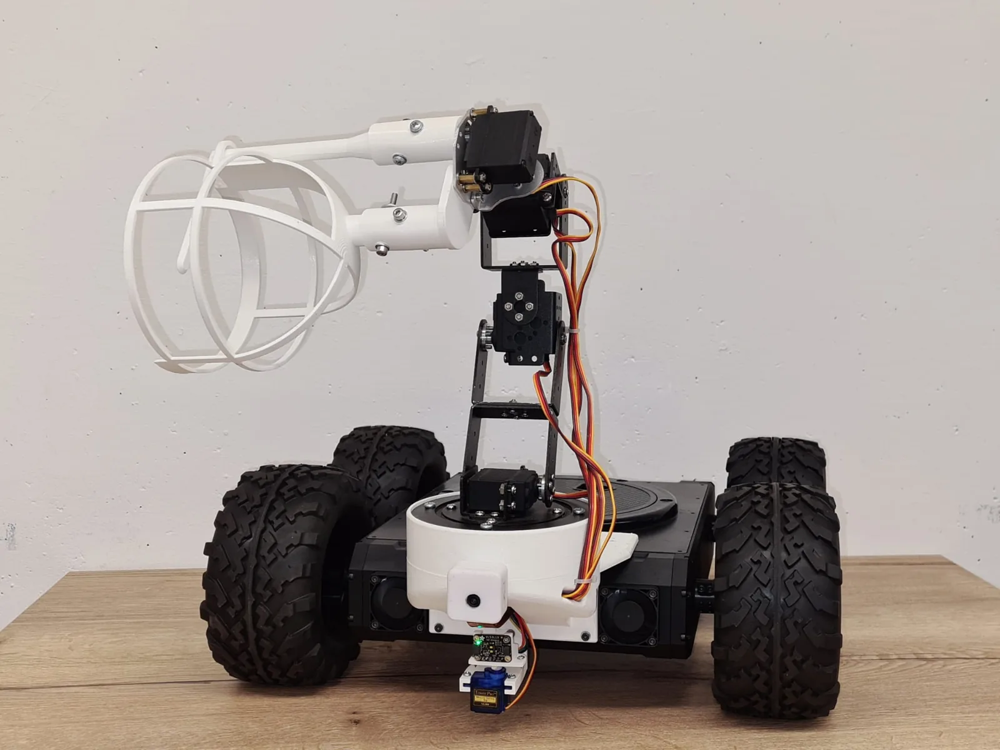
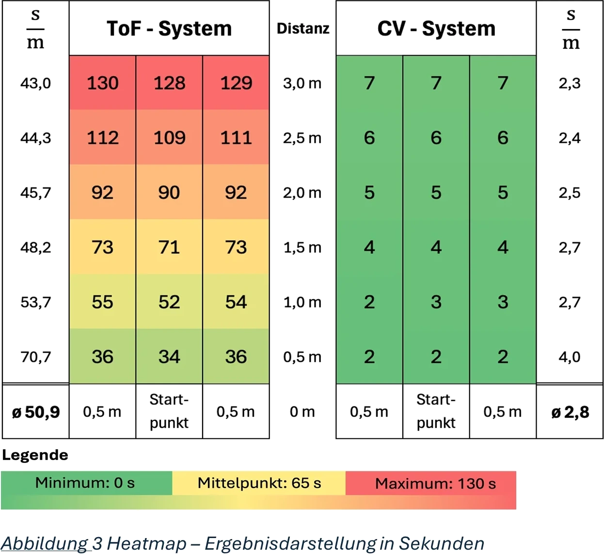
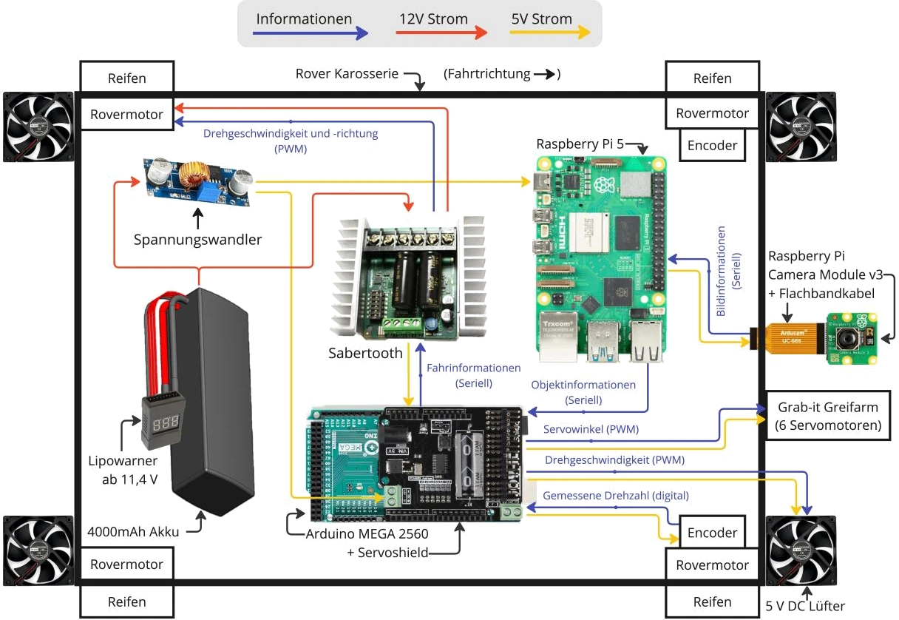

09/2023 - 08/2024 Engineering Office III & Product Engineering I Course at TH Köln
Autonomous Harvesting Robot
An autonomous rover that finds and collects plastic-ball “apples” — and an experiment comparing two different ways of detecting them.
01 / The system
Finding, approaching and collecting a target autonomously.
We developed a mobile harvesting robot combining a rover, robotic arm, gripper and object detector. The system had to locate a target, approach it and pick it up autonomously.

02 / Two ways to detect the same target
From a scanning distance sensor to computer vision.
The first version detected targets using a servo-swept time-of-flight scanner. We later replaced this sensing stage with a camera-based detection pipeline running on a Raspberry Pi 5 while keeping the rest of the system largely unchanged. That made it possible to compare both approaches on the same robot.

03 / Computer vision
Detecting the “apples” directly in the camera image.
For the vision-based system, I trained an object detector on 2,445 self-collected images and deployed the pipeline on a Raspberry Pi 5. The resulting detector provided a much faster way of locating targets than physically sweeping the environment with the distance sensor.

04 / Quantitative comparison
Measuring whether the new approach was actually better.
We evaluated both systems on the same indoor track across 18 target positions and compared retrieval speed and task reliability.
The camera-based system reduced average retrieval time from 50.9 to 2.8 seconds per metre and eliminated the observed task failures in the test setup. Statistical evaluation included Welch’s t-test for the timing comparison and Fisher’s exact test for the error-rate comparison.

Side-by-side comparison of both harvesting approaches.
05 / System architecture
Changing the sensor without rebuilding the robot.
The rover and gripper remained largely unchanged between both versions. An Arduino Mega 2560 handled heading, distance and actuator control, while the vision-based version added the Raspberry Pi perception pipeline. Keeping the downstream robot behaviour comparable was important for making the sensor comparison meaningful.

Outcome
Replacing the time-of-flight scanner with computer vision reduced average retrieval time from 50.9 to 2.8 s/m and eliminated the observed task failures, while the core robotic platform remained largely unchanged.